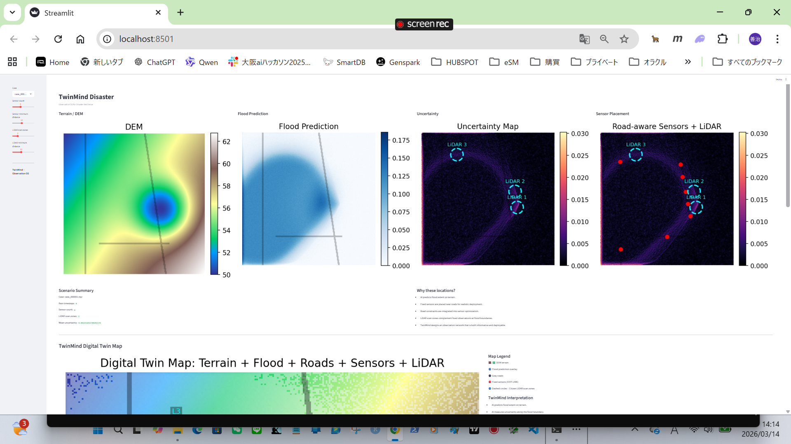
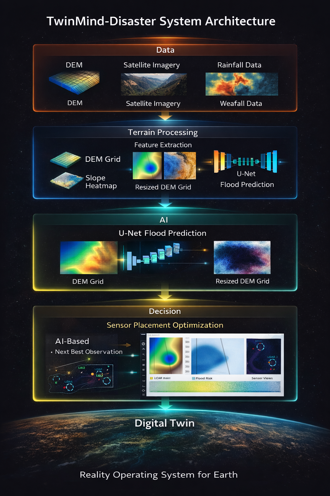

AI Digital Twin for Terrain-Aware Flood Prediction

TwinMind-Disaster is a research prototype showing how AI Digital Twin technology can integrate terrain data and deep learning to predict floods and optimize observation networks.
The system combines:
This repository represents an early prototype of the broader TwinMind concept:
AI does not only analyze the world.
It decides where the world should be observed next.
Project Website
https://gang0-jpg.github.io/TwinMind-Disaster/
GitHub Repository
https://github.com/gang0-jpg/TwinMind-Disaster
Flood monitoring systems traditionally rely on:
However, disasters evolve dynamically.
TwinMind explores a new paradigm:
AI-driven observation systems.
By combining terrain understanding and machine learning, the system aims to create adaptive observation networks that improve disaster prediction over time.

TwinMind-Disaster integrates:
The architecture demonstrates how AI can integrate terrain understanding with observation planning.
DEM Terrain Data
↓
Terrain Processing
↓
U-Net Flood Prediction
↓
Risk Estimation
↓
Sensor Placement Optimization
↓
Digital Twin Dashboard
The prototype dashboard visualizes:
Run locally:
streamlit run ui/twinmind_dashboard.pyTerrain elevation data is processed from GSI DEM XML files.
Pipeline
DEM XML
↓
Grid conversion (NumPy)
↓
DEM mosaic
↓
Resize to 64×64
↓
Training dataset
Generated datasets
data/dem_npy_grid/
├─ dem_for_training.npy
└─ slope_for_training.npyPrototype model: Small U-Net
Architecture
Conv2d(1,16)
Conv2d(16,16)
Conv2d(16,1)Input
Training script
scripts/train_unet.pyExperiments are tracked with MLflow.
Run MLflow UI
mlflow uiOpen
http://localhost:5000TwinMind-Disaster
│
├─ data
│ ├─ raw_dem
│ ├─ dem_xml
│ └─ dem_npy_grid
│
├─ scripts
│ ├─ dem_xml_to_grid_npy.py
│ ├─ mosaic_dem.py
│ ├─ resize_dem.py
│ ├─ make_slope.py
│ └─ train_unet.py
│
├─ twinmind_disaster
│
├─ ui
│ └─ twinmind_dashboard.py
│
├─ docs
│ ├─ index.html
│ ├─ architecture.png
│ └─ dashboard.png
│
├─ mlruns
│
├─ README.md
├─ requirements.txt
└─ .gitignoreClone repository
git clone https://github.com/gang0-jpg/TwinMind-Disaster.git
cd TwinMind-DisasterInstall dependencies
pip install -r requirements.txtExample requirements
numpy
torch
mlflow
streamlit
matplotlib
scipyRun training
python scripts/train_unet.pyExample parameters
python scripts/train_unet.py --epochs 10 --batch_size 4 --use_dem True --use_slope TrueTraining results are logged automatically in MLflow.
Terrain data is provided by:
Geospatial Information Authority of Japan
(GSI)
https://www.gsi.go.jp/kiban/
Dataset
Basic Map Information DEM (基盤地図情報 DEM)
⚠ DEM data is not included in this repository.
Users must download the dataset directly from GSI and follow the official usage terms.
Future development may include:
| Phase | Feature | Status |
|---|---|---|
| Phase 1 | DEM preprocessing | ✅ |
| Phase 2 | U-Net flood prediction | ✅ |
| Phase 3 | MLflow experiment tracking | ✅ |
| Phase 4 | Streamlit dashboard | 🚧 |
| Phase 5 | Sensor placement optimization | 📋 |
| Phase 6 | Real-time data ingestion | 📋 |
| Phase 7 | Advanced AI models | 📋 |
| Phase 8 | Full TwinMind platform | 🔭 |
TwinMind aims to become a
A platform where AI continuously learns from
to
If you use TwinMind-Disaster in your research, please cite:
@software{twinmind_disaster,
title = {TwinMind-Disaster: AI Digital Twin for Terrain-Aware Flood Prediction},
author = {Oka, Zenji},
year = {2026},
url = {https://github.com/gang0-jpg/TwinMind-Disaster}
}MIT License
Copyright (c) 2024-2026 Zenji Oka
Zenji Oka
Creator of TwinMind
GitHub
https://github.com/gang0-jpg
🌊 Predicting water, protecting life.